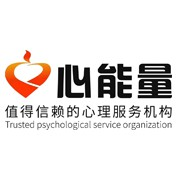

Xin Neng LiangZhengzhou · XIN NENG LIANGZHENGZHOU / THERAPY
Zhengzhou Xin Neng Liang
Michel Claeys and Xin Neng Liang have worked together on Essence Therapy courses in Zhengzhou. The team's archive includes photographs from April 2017 and records of a further course in 2019.
2017 · Zhengzhou Course2019 · Essence TherapyCourse
Learn about the collaboration along the timeline ↗